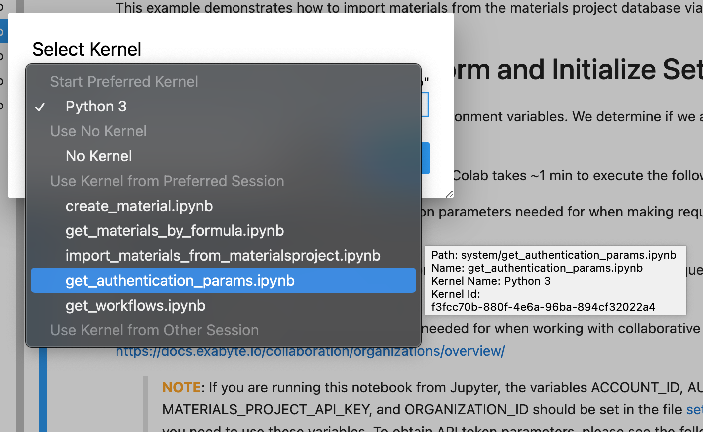

Mat3ra API Examples¶
Contents of this Repository¶
Below, we list the contents of this repository, in roughly the order that a user might want to go through it in order to learn how our API works.
| Folder | Notebook | Description |
|---|---|---|
| Examples/System | Get Authentication Params | Demonstrates how to programatically find your user ID and access token, which is to authenticate for many portions of the Mat3ra API. |
| Examples/Workflow | Get Workflows | Walks through how to query the Mat3ra API to programatically search for workflows. In this example, we search for workflows that calculate the total energy of a material. |
| Examples/Workflow | Quantum Espresso Workflow and Job | Create Quantum Espresso workflow starting from QE input file; create and submit job; after the job is finished, download output file, and finally perform postprocessing analysis. |
| Examples/Material | Get Materials by Formula | Shows how queries can be made to search for materials stored on your account by their formula. In this example, we search for a system containing Si. |
| Examples/Material | Create Material | Gives an overview of how materials can be generated in JSON format and uploaded to your user account. In this example, we create an FCC Si crystal and upload it. |
| Examples/Material | Import Materials from Materials Project | Demonstrates how materials can be imported from Materials Project, if their Materials Project ID is known. In this example, we import monoclinic and hexagonal SiGe cells. |
| Examples/Material | Import Materials from Poscar | Provides an example of how materials can be imported directly from Poscar files (a common chemical file format best-known for its use in VASP). In this example, we import the unit cell of SiGe. |
| Examples/Material | Interoperability between Mat3ra and Materials Project | In this notebook, we showcase a major advantage of APIs: interoperability. We begin by performing a query using the Materials Project API for all systems containing Iron and Oxygen. We then filter our results (for demonstraiton purposes, we keep only the first 10 materials found). Finally, we upload our results to the Mat3ra platform, where further calculations could be performed to characterize these materials. |
| Examples/Job | Create and Submit Job | Shows how to use the Mat3ra API to create jobs and run them on our cluster. In this example, we run a DFT calculation to get the total energy of an FCC Si unit cell using Quantum Espresso. |
| Examples/Job | Get File from Job | Guides you through using the Mat3ra API to query for a list of files produced by a job, describes the metadata assigned to each file, and ends by demonstrating how to download any remote file generated by a job to the local disk. |
| Examples/Job | Run Simulations and Extract Properties | Leads you through the process of copying a bank workflow to your account and using it to automatically calculate the properties of multiple materials. In this example, we determine the band gap of Si and Ge. |
| Examples/Job | ML - Train Model Predict Properties | Walks you through automated dataset generation and the training/prediction of material properties using machine learning. In this example, we calculate the band gaps of Si and SiGe, and using various materials properties as descriptors, train a model to predict their band gaps. Finally, we use this trained model to predict the band gap of Ge. |
Setup¶
NOTE: tested with Python version 3.8 and 3.10, please assert that the virtual environment is created with it. Use pyenv to manage Python versions.
Follow the steps below in order to setup and view the Jupyter notebooks:
-
Install git-lfs [3] in order to get access to the source code and notebook files.
-
Clone repository:
git clone https://github.com/Exabyte-io/api-examples.gitOr, if you have set up SSH keys
git clone git@github.com:Exabyte-io/api-examples.gitIn case for some reason git-lfs was not installed at the time of cloning, the files can be pulled after installing git-lfs, through
git lfs pull.Related to this, please be aware that as the
.ipynband.poscarfiles are stored on git-lfs, they are not part of the zip archive downloaded through GitHub's web interface. -
Install virtualenv using pip if not already present:
pip install virtualenv -
Create virtual environment and install required packages:
cd api-examples virtualenv .env source .env/bin/activate pip install -e ."[localhost]" -
Run Jupyter and open a notebook in a browser. In order for the post-save hook feature to work properly, one must launch their Jupyter Notebook environment in the folder that contains the file
config.py, which is theexamplesfolder shown below:cd examples jupyter lab --config=config.py
Usage¶
In order to run or edit the examples:
-
Assert an existing Mat3ra.com account. Examples require an account to run. New users can register here to obtain one.
-
Open settings and adjust it to provide the API authentication parameters. See the corresponding example to learn how to obtain the authentication parameters. It is also possible to generate an API token by logging in to Mat3ra platform, navigating to the Account Preferences, and clicking the 'Generate new token' button under API Tokens. More details can be found here.
-
Open the desired example notebook, adjust it as necessary and run. One can speed up the notebooks execution after running the Get Authentication Params one by reusing the kernel from the first notebook.

NOTE: The Materials Project API key should be obtained from https://legacy.materialsproject.org/open.
Contribute¶
This is an open-source repository and we welcome contributions for other use cases. The original set of examples is only meant to demonstrate the capabilities and can be extended.
We suggest forking this repository and introducing the adjustments there. The changes in the fork can further be considered for merging into this repository as it is commonly used on GitHub. This process is explained in more details elsewhere online [4].
If you would like to add new examples or adjust existing ones, please consider the following:
-
Put examples into the corresponding directories by domain.
-
Walk the readers through the examples by providing step-by-step explanation similar to this example.
-
We use post-save hooks to automatically convert notebooks to python scripts. See config file for more information. In order to facilitate code review, we exclude notebook sources in the
other/directory from version control and store them in Git LFS [3]. Please follow this convention. -
Apply code formatting by installing development requirements as follows:
pip install -e ."[dev]" pre-commit install pre-commit run --all-filesCheck more details about
pre-commithere.